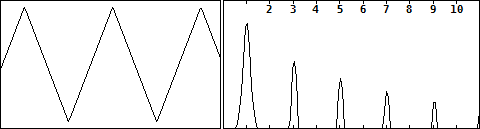
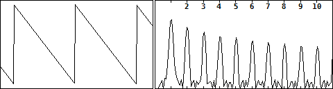
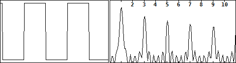
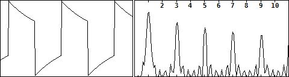
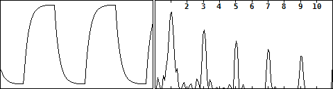
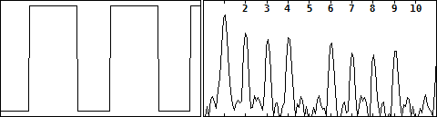

歪みと波形・倍音その7（各波形の倍音）
2017年12月06日 カテゴリー：歪みと波形・倍音
Pure Data(Pd)を使うと簡単に信号発生と倍音確認ができますので、メモとしてまとめておきます。
＜三角波＞

奇数次倍音がきれいに並んでいます。
＜ノコギリ波＞

奇数次倍音と偶数次倍音が両方出ています。
＜矩形波＞

ほぼ奇数次倍音ですが、三角波より倍音が多いです。
＜矩形波＋ハイパスフィルター＞（※振幅0.8倍）

波形が斜めにえぐりとられる感じになります。
＜矩形波＋ローパスフィルター＞

波形が丸く削られる形になります。ローパスフィルターなので高域の倍音が減ります。
＜パルス波＞（※パルス波という呼称でいいのか不明）

矩形波に似ていますが、プラス側とマイナス側になっている時間の幅の比が1:1（デューティ比0.5）ではありません。上図はデューティ比0.6の場合で、偶数次倍音が出ています。真空管の歪みを調べた際にハイゲインでも偶数次倍音が多かったのは、この波形に近いためかもしれないと考えています。